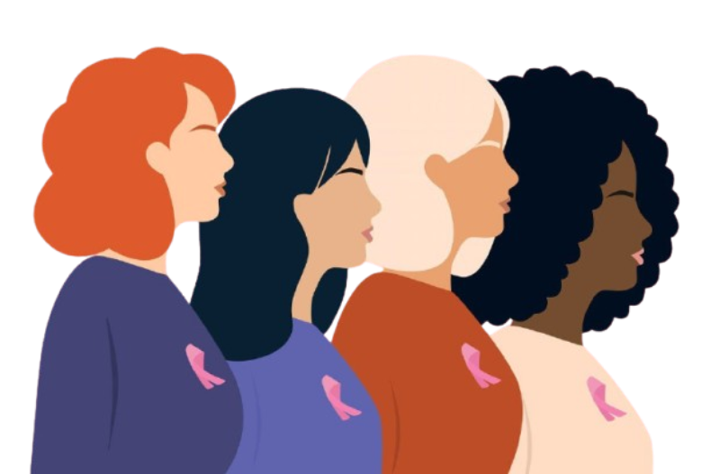

Sobre o Câncer de Mama

O que é?
O câncer de mama é uma doença causada pela multiplicação desordenada de células anormais no tecido mamário, sendo o tipo de câncer mais comum entre as mulheres em todo o mundo.
Fatores de risco
- Excesso de peso corporal e sedentarismo
- Consumo de bebidas alcoólicas
- Histórico familiar de câncer de mama (fatores genéticos)
- Primeira menstruação precoce ou menopausa tardia